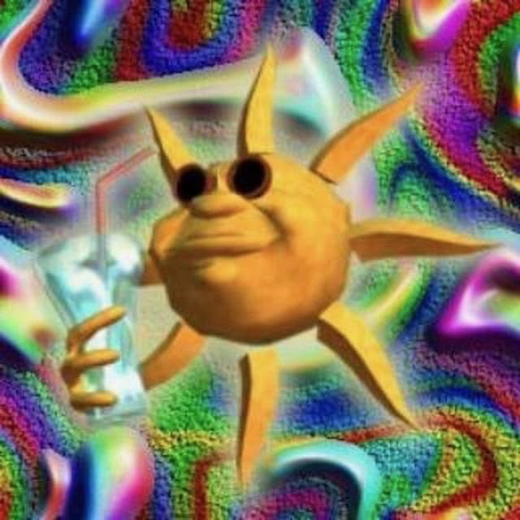

Hello, my name is Sophia Minerva Godoy, im 21 years old. Im a graphic design major, and this is my first time im coding on my own... kinda nervous but im determined. My favorite music genre is Alternative, my favorite band is The Strokes. I would probably say my second favorite is U2. People say they make old people music but i swear theyre actually good so dont slander my goat. I have two jobs, I work on weekends at the cabrillo Marine Aquarium in San Pedro. During the week I go to class, but also work as the LSU graphic designer! I hope you get to see my work this year! I love to draw, and oh! I just finished paying off my car recently! Im excited to graduate, so far this class has been fun! Below are some things about me and just random stuff i thought would be cool to add.
"Graphic design is my passion" XDBelow is my personal playlist, just something I thought would be cool to share.

This here is my favorite music quote
"When Roles are reversed, opinions are too" Out of The Blue